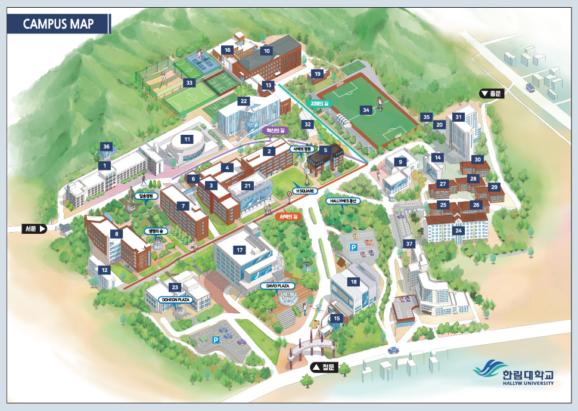

20192928윤선재
디지털 미디어 콘텐츠 전공
디지털 인문 예술 복수전공
- 호평동
- 한림대학교
호평동
위치경기 남양주시
면적9.13km²
인구50,217명
평내호평역이 있으며, 경춘선 철도와 46번 국도가 지나는 쾌적한 전원도시이다.
한림대학교
개교시기1982년
유형사립 종합대학
교훈사랑, 자유, 진실
학생수10,981명
전임교원수781명

한림대학교는 1982년 설립 당시부터 대한민국의 교육이념인 ‘홍익인간’을 바탕으로 하고 있으며, 이를 달성하기 위해 ‘풍부한 인간성과 창조적 지성을 지닌 인재를 양성하고, 학술 및 문화의 진흥을 도모’ 함으로써 ‘개인의 성장, 사회의 발전, 국가의 번영, 인류의 행복에 기여함’을 목표로 합니다.